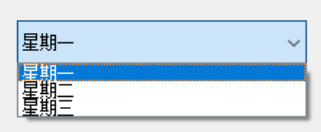
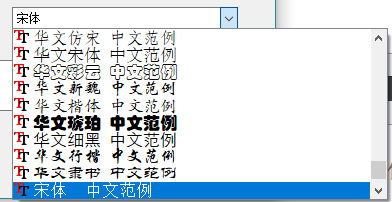

QComboBox
QComboBox下拉列表框是一个组合控件（包含一个文本显示控件和一个按钮）。它默认显示最小的控件给用户来操作，并且可以用下拉选择的界面提供给用户更多的预置选项。- 它是直接继承自QWidget。

1.基本操作
QComboBox的主要功能主要包括以下几点：
1.1添加项
下拉框的内容有两种增加方式：追加和指定位置添加。
1
2
| m_combox->addItem("星期四");
m_combox->insertItem(2,"星期五");
|
还有一种增加的方法：批量增加。用一个可迭代的数据就可以
1
2
3
4
5
| QList<QString> com_list;
com_list.append("星期一");
com_list.append("星期二");
com_list.append("星期三");
m_combox->addItems(com_list);
|
1.2删除项
1
| m_combox->removeItem(1);
|
1.3修改项
1
| m_combox->setItemText(2,"这是修改项");
|
1.4插入分割线
1
| m_combox->insertSeparator(3);
|
2.signals
2.1条目更改
2.2当前条目改变
1
2
| QComboBox::currentIndexChanged();
QComboBox::currentTextChanged();
|
2.3高亮发生变化
1
| QComboBox::highlighted();
|
3.QFontComboBox
该控件继承自QComboBox，也是一个下拉列表框，用于选择字体
